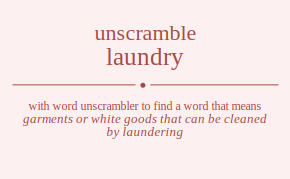

The word found after unscrambling laundry means that garments or white goods that can be cleaned by laundering, workplace where clothes are washed and ironed, .

The word found after unscrambling laundry means that garments or white goods that can be cleaned by laundering, workplace where clothes are washed and ironed, .
You can also find solutions for different combinations of letters in laundry like laundry laundyr launrdy launryd launydr launyrd laudnry laudnyr laudrny laudryn laudynr laudyrn laurndy laurnyd laurdny laurdyn laurynd laurydn lauyndr lauynrd lauydnr lauydrn lauyrnd lauyrdn lanudry lanudyr lanurdy lanuryd lanuydr lanuyrd landury landuyr landruy landryu landyur landyru lanrudy lanruyd lanrduy lanrdyu lanryud lanrydu lanyudr lanyurd lanydur lanydru lanyrud lanyrdu ladunry ladunyr ladurny laduryn laduynr laduyrn ladnury ladnuyr ladnruy ladnryu ladnyur ladnyru ladruny ladruyn ladrnuy ladrnyu ladryun ladrynu ladyunr ladyurn ladynur ladynru ladyrun ladyrnu larundy larunyd larudny larudyn laruynd laruydn larnudy larnuyd larnduy larndyu larnyud larnydu larduny larduyn lardnuy lardnyu lardyun lardynu laryund laryudn larynud laryndu larydun larydnu layundr layunrd layudnr layudrn layurnd layurdn laynudr laynurd layndur layndru laynrud laynrdu laydunr laydurn laydnur laydnru laydrun laydrnu layrund layrudn layrnud layrndu layrdun layrdnu luandry luandyr luanrdy luanryd luanydr luanyrd luadnry luadnyr luadrny luadryn luadynr luadyrn luarndy luarnyd luardny luardyn luarynd luarydn luayndr luaynrd luaydnr luaydrn luayrnd luayrdn lunadry lunadyr lunardy lunaryd lunaydr lunayrd lundary lundayr lundray lundrya lundyar lundyra lunrady lunrayd lunrday lunrdya lunryad lunryda lunyadr lunyard lunydar lunydra lunyrad lunyrda ludanry ludanyr ludarny ludaryn ludaynr ludayrn ludnary ludnayr ludnray ludnrya ludnyar ludnyra ludrany ludrayn ludrnay ludrnya ludryan ludryna ludyanr ludyarn ludynar ludynra ludyran ludyrna lurandy luranyd luradny luradyn luraynd luraydn lurnady lurnayd lurnday lurndya lurnyad lurnyda lurdany lurdayn lurdnay lurdnya lurdyan lurdyna luryand luryadn lurynad lurynda lurydan lurydna luyandr luyanrd luyadnr luyadrn luyarnd luyardn luynadr luynard luyndar luyndra luynrad luynrda luydanr luydarn luydnar luydnra luydran luydrna luyrand luyradn luyrnad luyrnda luyrdan luyrdna lnaudry lnaudyr lnaurdy lnauryd lnauydr lnauyrd lnadury lnaduyr lnadruy lnadryu lnadyur lnadyru lnarudy lnaruyd lnarduy lnardyu lnaryud lnarydu lnayudr lnayurd lnaydur lnaydru lnayrud lnayrdu lnuadry lnuadyr lnuardy lnuaryd lnuaydr lnuayrd lnudary lnudayr lnudray lnudrya lnudyar lnudyra lnurady lnurayd lnurday lnurdya lnuryad lnuryda lnuyadr lnuyard lnuydar lnuydra lnuyrad lnuyrda lndaury lndauyr lndaruy lndaryu lndayur lndayru lnduary lnduayr lnduray lndurya lnduyar lnduyra lndrauy lndrayu lndruay lndruya lndryau lndryua lndyaur lndyaru lndyuar lndyura lndyrau lndyrua lnraudy lnrauyd lnraduy lnradyu lnrayud lnraydu lnruady lnruayd lnruday lnrudya lnruyad lnruyda lnrdauy lnrdayu lnrduay lnrduya lnrdyau lnrdyua lnryaud lnryadu lnryuad lnryuda lnrydau lnrydua lnyaudr lnyaurd lnyadur lnyadru lnyarud lnyardu lnyuadr lnyuard lnyudar lnyudra lnyurad lnyurda lnydaur lnydaru lnyduar lnydura lnydrau lnydrua lnyraud lnyradu lnyruad lnyruda lnyrdau lnyrdua ldaunry ldaunyr ldaurny ldauryn ldauynr ldauyrn ldanury ldanuyr ldanruy ldanryu ldanyur ldanyru ldaruny ldaruyn ldarnuy ldarnyu ldaryun ldarynu ldayunr ldayurn ldaynur ldaynru ldayrun ldayrnu lduanry lduanyr lduarny lduaryn lduaynr lduayrn ldunary ldunayr ldunray ldunrya ldunyar ldunyra ldurany ldurayn ldurnay ldurnya lduryan lduryna lduyanr lduyarn lduynar lduynra lduyran lduyrna ldnaury ldnauyr ldnaruy ldnaryu ldnayur ldnayru ldnuary ldnuayr ldnuray ldnurya ldnuyar ldnuyra ldnrauy ldnrayu ldnruay ldnruya ldnryau ldnryua ldnyaur ldnyaru ldnyuar ldnyura ldnyrau ldnyrua ldrauny ldrauyn ldranuy ldranyu ldrayun ldraynu ldruany ldruayn ldrunay ldrunya ldruyan ldruyna ldrnauy ldrnayu ldrnuay ldrnuya ldrnyau ldrnyua ldryaun ldryanu ldryuan ldryuna ldrynau ldrynua ldyaunr ldyaurn ldyanur ldyanru ldyarun ldyarnu ldyuanr ldyuarn ldyunar ldyunra ldyuran ldyurna ldynaur ldynaru ldynuar ldynura ldynrau ldynrua ldyraun ldyranu ldyruan ldyruna ldyrnau ldyrnua lraundy lraunyd lraudny lraudyn lrauynd lrauydn lranudy lranuyd lranduy lrandyu lranyud lranydu lraduny lraduyn lradnuy lradnyu lradyun lradynu lrayund lrayudn lraynud lrayndu lraydun lraydnu lruandy lruanyd lruadny lruadyn lruaynd lruaydn lrunady lrunayd lrunday lrundya lrunyad lrunyda lrudany lrudayn lrudnay lrudnya lrudyan lrudyna lruyand lruyadn lruynad lruynda lruydan lruydna lrnaudy lrnauyd lrnaduy lrnadyu lrnayud lrnaydu lrnuady lrnuayd lrnuday lrnudya lrnuyad lrnuyda lrndauy lrndayu lrnduay lrnduya lrndyau lrndyua lrnyaud lrnyadu lrnyuad lrnyuda lrnydau lrnydua lrdauny lrdauyn lrdanuy lrdanyu lrdayun lrdaynu lrduany lrduayn lrdunay lrdunya lrduyan lrduyna lrdnauy lrdnayu lrdnuay lrdnuya lrdnyau lrdnyua lrdyaun lrdyanu lrdyuan lrdyuna lrdynau lrdynua lryaund lryaudn lryanud lryandu lryadun lryadnu lryuand lryuadn lryunad lryunda lryudan lryudna lrynaud lrynadu lrynuad lrynuda lryndau lryndua lrydaun lrydanu lryduan lryduna lrydnau lrydnua lyaundr lyaunrd lyaudnr lyaudrn lyaurnd lyaurdn lyanudr lyanurd lyandur lyandru lyanrud lyanrdu lyadunr lyadurn lyadnur lyadnru lyadrun lyadrnu lyarund lyarudn lyarnud lyarndu lyardun lyardnu lyuandr lyuanrd lyuadnr lyuadrn lyuarnd lyuardn lyunadr lyunard lyundar lyundra lyunrad lyunrda lyudanr lyudarn lyudnar lyudnra lyudran lyudrna lyurand lyuradn lyurnad lyurnda lyurdan lyurdna lynaudr lynaurd lynadur lynadru lynarud lynardu lynuadr lynuard lynudar lynudra lynurad lynurda lyndaur lyndaru lynduar lyndura lyndrau lyndrua lynraud lynradu lynruad lynruda lynrdau lynrdua lydaunr lydaurn lydanur lydanru lydarun lydarnu lyduanr lyduarn lydunar lydunra lyduran lydurna lydnaur lydnaru lydnuar lydnura lydnrau lydnrua lydraun lydranu lydruan lydruna lydrnau lydrnua lyraund lyraudn lyranud lyrandu lyradun lyradnu lyruand lyruadn lyrunad lyrunda lyrudan lyrudna lyrnaud lyrnadu lyrnuad lyrnuda lyrndau lyrndua lyrdaun lyrdanu lyrduan lyrduna lyrdnau lyrdnua alundry alundyr alunrdy alunryd alunydr alunyrd aludnry aludnyr aludrny aludryn aludynr aludyrn alurndy alurnyd alurdny alurdyn alurynd alurydn aluyndr aluynrd aluydnr aluydrn aluyrnd aluyrdn alnudry alnudyr alnurdy alnuryd alnuydr alnuyrd alndury alnduyr alndruy alndryu alndyur alndyru alnrudy alnruyd alnrduy alnrdyu alnryud alnrydu alnyudr alnyurd alnydur alnydru alnyrud alnyrdu aldunry aldunyr aldurny alduryn alduynr alduyrn aldnury aldnuyr aldnruy aldnryu aldnyur aldnyru aldruny aldruyn aldrnuy aldrnyu aldryun aldrynu aldyunr aldyurn aldynur aldynru aldyrun aldyrnu alrundy alrunyd alrudny alrudyn alruynd alruydn alrnudy alrnuyd alrnduy alrndyu alrnyud alrnydu alrduny alrduyn alrdnuy alrdnyu alrdyun alrdynu alryund alryudn alrynud alryndu alrydun alrydnu alyundr alyunrd alyudnr alyudrn alyurnd alyurdn alynudr alynurd alyndur alyndru alynrud alynrdu alydunr alydurn alydnur alydnru alydrun alydrnu alyrund alyrudn alyrnud alyrndu alyrdun alyrdnu aulndry aulndyr aulnrdy aulnryd aulnydr aulnyrd auldnry auldnyr auldrny auldryn auldynr auldyrn aulrndy aulrnyd aulrdny aulrdyn aulrynd aulrydn aulyndr aulynrd aulydnr aulydrn aulyrnd aulyrdn aunldry aunldyr aunlrdy aunlryd aunlydr aunlyrd aundlry aundlyr aundrly aundryl aundylr aundyrl aunrldy aunrlyd aunrdly aunrdyl aunryld aunrydl aunyldr aunylrd aunydlr aunydrl aunyrld aunyrdl audlnry audlnyr audlrny audlryn audlynr audlyrn audnlry audnlyr audnrly audnryl audnylr audnyrl audrlny audrlyn audrnly audrnyl audryln audrynl audylnr audylrn audynlr audynrl audyrln audyrnl aurlndy aurlnyd aurldny aurldyn aurlynd aurlydn aurnldy aurnlyd aurndly aurndyl aurnyld aurnydl aurdlny aurdlyn aurdnly aurdnyl aurdyln aurdynl aurylnd auryldn aurynld auryndl aurydln aurydnl auylndr auylnrd auyldnr auyldrn auylrnd auylrdn auynldr auynlrd auyndlr auyndrl auynrld auynrdl auydlnr auydlrn auydnlr auydnrl auydrln auydrnl auyrlnd auyrldn auyrnld auyrndl auyrdln auyrdnl anludry anludyr anlurdy anluryd anluydr anluyrd anldury anlduyr anldruy anldryu anldyur anldyru anlrudy anlruyd anlrduy anlrdyu anlryud anlrydu anlyudr anlyurd anlydur anlydru anlyrud anlyrdu anuldry anuldyr anulrdy anulryd anulydr anulyrd anudlry anudlyr anudrly anudryl anudylr anudyrl anurldy anurlyd anurdly anurdyl anuryld anurydl anuyldr anuylrd anuydlr anuydrl anuyrld anuyrdl andlury andluyr andlruy andlryu andlyur andlyru andulry andulyr andurly anduryl anduylr anduyrl andrluy andrlyu andruly andruyl andrylu andryul andylur andylru andyulr andyurl andyrlu andyrul anrludy anrluyd anrlduy anrldyu anrlyud anrlydu anruldy anrulyd anrudly anrudyl anruyld anruydl anrdluy anrdlyu anrduly anrduyl anrdylu anrdyul anrylud anryldu anryuld anryudl anrydlu anrydul anyludr anylurd anyldur anyldru anylrud anylrdu anyuldr anyulrd anyudlr anyudrl anyurld anyurdl anydlur anydlru anydulr anydurl anydrlu anydrul anyrlud anyrldu anyruld anyrudl anyrdlu anyrdul adlunry adlunyr adlurny adluryn adluynr adluyrn adlnury adlnuyr adlnruy adlnryu adlnyur adlnyru adlruny adlruyn adlrnuy adlrnyu adlryun adlrynu adlyunr adlyurn adlynur adlynru adlyrun adlyrnu adulnry adulnyr adulrny adulryn adulynr adulyrn adunlry adunlyr adunrly adunryl adunylr adunyrl adurlny adurlyn adurnly adurnyl aduryln adurynl aduylnr aduylrn aduynlr aduynrl aduyrln aduyrnl adnlury adnluyr adnlruy adnlryu adnlyur adnlyru adnulry adnulyr adnurly adnuryl adnuylr adnuyrl adnrluy adnrlyu adnruly adnruyl adnrylu adnryul adnylur adnylru adnyulr adnyurl adnyrlu adnyrul adrluny adrluyn adrlnuy adrlnyu adrlyun adrlynu adrulny adrulyn adrunly adrunyl adruyln adruynl adrnluy adrnlyu adrnuly adrnuyl adrnylu adrnyul adrylun adrylnu adryuln adryunl adrynlu adrynul adylunr adylurn adylnur adylnru adylrun adylrnu adyulnr adyulrn adyunlr adyunrl adyurln adyurnl adynlur adynlru adynulr adynurl adynrlu adynrul adyrlun adyrlnu adyruln adyrunl adyrnlu adyrnul arlundy arlunyd arludny arludyn arluynd arluydn arlnudy arlnuyd arlnduy arlndyu arlnyud arlnydu arlduny arlduyn arldnuy arldnyu arldyun arldynu arlyund arlyudn arlynud arlyndu arlydun arlydnu arulndy arulnyd aruldny aruldyn arulynd arulydn arunldy arunlyd arundly arundyl arunyld arunydl arudlny arudlyn arudnly arudnyl arudyln arudynl aruylnd aruyldn aruynld aruyndl aruydln aruydnl arnludy arnluyd arnlduy arnldyu arnlyud arnlydu arnuldy arnulyd arnudly arnudyl arnuyld arnuydl arndluy arndlyu arnduly arnduyl arndylu arndyul arnylud arnyldu arnyuld arnyudl arnydlu arnydul ardluny ardluyn ardlnuy ardlnyu ardlyun ardlynu ardulny ardulyn ardunly ardunyl arduyln arduynl ardnluy ardnlyu ardnuly ardnuyl ardnylu ardnyul ardylun ardylnu ardyuln ardyunl ardynlu ardynul arylund aryludn arylnud arylndu aryldun aryldnu aryulnd aryuldn aryunld aryundl aryudln aryudnl arynlud arynldu arynuld arynudl aryndlu aryndul arydlun arydlnu aryduln arydunl arydnlu arydnul aylundr aylunrd ayludnr ayludrn aylurnd aylurdn aylnudr aylnurd aylndur aylndru aylnrud aylnrdu ayldunr ayldurn ayldnur ayldnru ayldrun ayldrnu aylrund aylrudn aylrnud aylrndu aylrdun aylrdnu ayulndr ayulnrd ayuldnr ayuldrn ayulrnd ayulrdn ayunldr ayunlrd ayundlr ayundrl ayunrld ayunrdl ayudlnr ayudlrn ayudnlr ayudnrl ayudrln ayudrnl ayurlnd ayurldn ayurnld ayurndl ayurdln ayurdnl aynludr aynlurd aynldur aynldru aynlrud aynlrdu aynuldr aynulrd aynudlr aynudrl aynurld aynurdl ayndlur ayndlru ayndulr ayndurl ayndrlu ayndrul aynrlud aynrldu aynruld aynrudl aynrdlu aynrdul aydlunr aydlurn aydlnur aydlnru aydlrun aydlrnu aydulnr aydulrn aydunlr aydunrl aydurln aydurnl aydnlur aydnlru aydnulr aydnurl aydnrlu aydnrul aydrlun aydrlnu aydruln aydrunl aydrnlu aydrnul ayrlund ayrludn ayrlnud ayrlndu ayrldun ayrldnu ayrulnd ayruldn ayrunld ayrundl ayrudln ayrudnl ayrnlud ayrnldu ayrnuld ayrnudl ayrndlu ayrndul ayrdlun ayrdlnu ayrduln ayrdunl ayrdnlu ayrdnul ulandry ulandyr ulanrdy ulanryd ulanydr ulanyrd uladnry uladnyr uladrny uladryn uladynr uladyrn ularndy ularnyd ulardny ulardyn ularynd ularydn ulayndr ulaynrd ulaydnr ulaydrn ulayrnd ulayrdn ulnadry ulnadyr ulnardy ulnaryd ulnaydr ulnayrd ulndary ulndayr ulndray ulndrya ulndyar ulndyra ulnrady ulnrayd ulnrday ulnrdya ulnryad ulnryda ulnyadr ulnyard ulnydar ulnydra ulnyrad ulnyrda uldanry uldanyr uldarny uldaryn uldaynr uldayrn uldnary uldnayr uldnray uldnrya uldnyar uldnyra uldrany uldrayn uldrnay uldrnya uldryan uldryna uldyanr uldyarn uldynar uldynra uldyran uldyrna ulrandy ulranyd ulradny ulradyn ulraynd ulraydn ulrnady ulrnayd ulrnday ulrndya ulrnyad ulrnyda ulrdany ulrdayn ulrdnay ulrdnya ulrdyan ulrdyna ulryand ulryadn ulrynad ulrynda ulrydan ulrydna ulyandr ulyanrd ulyadnr ulyadrn ulyarnd ulyardn ulynadr ulynard ulyndar ulyndra ulynrad ulynrda ulydanr ulydarn ulydnar ulydnra ulydran ulydrna ulyrand ulyradn ulyrnad ulyrnda ulyrdan ulyrdna ualndry ualndyr ualnrdy ualnryd ualnydr ualnyrd ualdnry ualdnyr ualdrny ualdryn ualdynr ualdyrn ualrndy ualrnyd ualrdny ualrdyn ualrynd ualrydn ualyndr ualynrd ualydnr ualydrn ualyrnd ualyrdn uanldry uanldyr uanlrdy uanlryd uanlydr uanlyrd uandlry uandlyr uandrly uandryl uandylr uandyrl uanrldy uanrlyd uanrdly uanrdyl uanryld uanrydl uanyldr uanylrd uanydlr uanydrl uanyrld uanyrdl uadlnry uadlnyr uadlrny uadlryn uadlynr uadlyrn uadnlry uadnlyr uadnrly uadnryl uadnylr uadnyrl uadrlny uadrlyn uadrnly uadrnyl uadryln uadrynl uadylnr uadylrn uadynlr uadynrl uadyrln uadyrnl uarlndy uarlnyd uarldny uarldyn uarlynd uarlydn uarnldy uarnlyd uarndly uarndyl uarnyld uarnydl uardlny uardlyn uardnly uardnyl uardyln uardynl uarylnd uaryldn uarynld uaryndl uarydln uarydnl uaylndr uaylnrd uayldnr uayldrn uaylrnd uaylrdn uaynldr uaynlrd uayndlr uayndrl uaynrld uaynrdl uaydlnr uaydlrn uaydnlr uaydnrl uaydrln uaydrnl uayrlnd uayrldn uayrnld uayrndl uayrdln uayrdnl unladry unladyr unlardy unlaryd unlaydr unlayrd unldary unldayr unldray unldrya unldyar unldyra unlrady unlrayd unlrday unlrdya unlryad unlryda unlyadr unlyard unlydar unlydra unlyrad unlyrda unaldry unaldyr unalrdy unalryd unalydr unalyrd unadlry unadlyr unadrly unadryl unadylr unadyrl unarldy unarlyd unardly unardyl unaryld unarydl unayldr unaylrd unaydlr unaydrl unayrld unayrdl undlary undlayr undlray undlrya undlyar undlyra undalry undalyr undarly undaryl undaylr undayrl undrlay undrlya undraly undrayl undryla undryal undylar undylra undyalr undyarl undyrla undyral unrlady unrlayd unrlday unrldya unrlyad unrlyda unraldy unralyd unradly unradyl unrayld unraydl unrdlay unrdlya unrdaly unrdayl unrdyla unrdyal unrylad unrylda unryald unryadl unrydla unrydal unyladr unylard unyldar unyldra unylrad unylrda unyaldr unyalrd unyadlr unyadrl unyarld unyardl unydlar unydlra unydalr unydarl unydrla unydral unyrlad unyrlda unyrald unyradl unyrdla unyrdal udlanry udlanyr udlarny udlaryn udlaynr udlayrn udlnary udlnayr udlnray udlnrya udlnyar udlnyra udlrany udlrayn udlrnay udlrnya udlryan udlryna udlyanr udlyarn udlynar udlynra udlyran udlyrna udalnry udalnyr udalrny udalryn udalynr udalyrn udanlry udanlyr udanrly udanryl udanylr udanyrl udarlny udarlyn udarnly udarnyl udaryln udarynl udaylnr udaylrn udaynlr udaynrl udayrln udayrnl udnlary udnlayr udnlray udnlrya udnlyar udnlyra udnalry udnalyr udnarly udnaryl udnaylr udnayrl udnrlay udnrlya udnraly udnrayl udnryla udnryal udnylar udnylra udnyalr udnyarl udnyrla udnyral udrlany udrlayn udrlnay udrlnya udrlyan udrlyna udralny udralyn udranly udranyl udrayln udraynl udrnlay udrnlya udrnaly udrnayl udrnyla udrnyal udrylan udrylna udryaln udryanl udrynla udrynal udylanr udylarn udylnar udylnra udylran udylrna udyalnr udyalrn udyanlr udyanrl udyarln udyarnl udynlar udynlra udynalr udynarl udynrla udynral udyrlan udyrlna udyraln udyranl udyrnla udyrnal urlandy urlanyd urladny urladyn urlaynd urlaydn urlnady urlnayd urlnday urlndya urlnyad urlnyda urldany urldayn urldnay urldnya urldyan urldyna urlyand urlyadn urlynad urlynda urlydan urlydna uralndy uralnyd uraldny uraldyn uralynd uralydn uranldy uranlyd urandly urandyl uranyld uranydl uradlny uradlyn uradnly uradnyl uradyln uradynl uraylnd urayldn uraynld urayndl uraydln uraydnl urnlady urnlayd urnlday urnldya urnlyad urnlyda urnaldy urnalyd urnadly urnadyl urnayld urnaydl urndlay urndlya urndaly urndayl urndyla urndyal urnylad urnylda urnyald urnyadl urnydla urnydal urdlany urdlayn urdlnay urdlnya urdlyan urdlyna urdalny urdalyn urdanly urdanyl urdayln urdaynl urdnlay urdnlya urdnaly urdnayl urdnyla urdnyal urdylan urdylna urdyaln urdyanl urdynla urdynal uryland uryladn urylnad urylnda uryldan uryldna uryalnd uryaldn uryanld uryandl uryadln uryadnl urynlad urynlda urynald urynadl uryndla uryndal urydlan urydlna urydaln urydanl urydnla urydnal uylandr uylanrd uyladnr uyladrn uylarnd uylardn uylnadr uylnard uylndar uylndra uylnrad uylnrda uyldanr uyldarn uyldnar uyldnra uyldran uyldrna uylrand uylradn uylrnad uylrnda uylrdan uylrdna uyalndr uyalnrd uyaldnr uyaldrn uyalrnd uyalrdn uyanldr uyanlrd uyandlr uyandrl uyanrld uyanrdl uyadlnr uyadlrn uyadnlr uyadnrl uyadrln uyadrnl uyarlnd uyarldn uyarnld uyarndl uyardln uyardnl uynladr uynlard uynldar uynldra uynlrad uynlrda uynaldr uynalrd uynadlr uynadrl uynarld uynardl uyndlar uyndlra uyndalr uyndarl uyndrla uyndral uynrlad uynrlda uynrald uynradl uynrdla uynrdal uydlanr uydlarn uydlnar uydlnra uydlran uydlrna uydalnr uydalrn uydanlr uydanrl uydarln uydarnl uydnlar uydnlra uydnalr uydnarl uydnrla uydnral uydrlan uydrlna uydraln uydranl uydrnla uydrnal uyrland uyrladn uyrlnad uyrlnda uyrldan uyrldna uyralnd uyraldn uyranld uyrandl uyradln uyradnl uyrnlad uyrnlda uyrnald uyrnadl uyrndla uyrndal uyrdlan uyrdlna uyrdaln uyrdanl uyrdnla uyrdnal nlaudry nlaudyr nlaurdy nlauryd nlauydr nlauyrd nladury nladuyr nladruy nladryu nladyur nladyru nlarudy nlaruyd nlarduy nlardyu nlaryud nlarydu nlayudr nlayurd nlaydur nlaydru nlayrud nlayrdu nluadry nluadyr nluardy nluaryd nluaydr nluayrd nludary nludayr nludray nludrya nludyar nludyra nlurady nlurayd nlurday nlurdya nluryad nluryda nluyadr nluyard nluydar nluydra nluyrad nluyrda nldaury nldauyr nldaruy nldaryu nldayur nldayru nlduary nlduayr nlduray nldurya nlduyar nlduyra nldrauy nldrayu nldruay nldruya nldryau nldryua nldyaur nldyaru nldyuar nldyura nldyrau nldyrua nlraudy nlrauyd nlraduy nlradyu nlrayud nlraydu nlruady nlruayd nlruday nlrudya nlruyad nlruyda nlrdauy nlrdayu nlrduay nlrduya nlrdyau nlrdyua nlryaud nlryadu nlryuad nlryuda nlrydau nlrydua nlyaudr nlyaurd nlyadur nlyadru nlyarud nlyardu nlyuadr nlyuard nlyudar nlyudra nlyurad nlyurda nlydaur nlydaru nlyduar nlydura nlydrau nlydrua nlyraud nlyradu nlyruad nlyruda nlyrdau nlyrdua naludry naludyr nalurdy naluryd naluydr naluyrd naldury nalduyr naldruy naldryu naldyur naldyru nalrudy nalruyd nalrduy nalrdyu nalryud nalrydu nalyudr nalyurd nalydur nalydru nalyrud nalyrdu nauldry nauldyr naulrdy naulryd naulydr naulyrd naudlry naudlyr naudrly naudryl naudylr naudyrl naurldy naurlyd naurdly naurdyl nauryld naurydl nauyldr nauylrd nauydlr nauydrl nauyrld nauyrdl nadlury nadluyr nadlruy nadlryu nadlyur nadlyru nadulry nadulyr nadurly naduryl naduylr naduyrl nadrluy nadrlyu nadruly nadruyl nadrylu nadryul nadylur nadylru nadyulr nadyurl nadyrlu nadyrul narludy narluyd narlduy narldyu narlyud narlydu naruldy narulyd narudly narudyl naruyld naruydl nardluy nardlyu narduly narduyl nardylu nardyul narylud naryldu naryuld naryudl narydlu narydul nayludr naylurd nayldur nayldru naylrud naylrdu nayuldr nayulrd nayudlr nayudrl nayurld nayurdl naydlur naydlru naydulr naydurl naydrlu naydrul nayrlud nayrldu nayruld nayrudl nayrdlu nayrdul nuladry nuladyr nulardy nularyd nulaydr nulayrd nuldary nuldayr nuldray nuldrya nuldyar nuldyra nulrady nulrayd nulrday nulrdya nulryad nulryda nulyadr nulyard nulydar nulydra nulyrad nulyrda nualdry nualdyr nualrdy nualryd nualydr nualyrd nuadlry nuadlyr nuadrly nuadryl nuadylr nuadyrl nuarldy nuarlyd nuardly nuardyl nuaryld nuarydl nuayldr nuaylrd nuaydlr nuaydrl nuayrld nuayrdl nudlary nudlayr nudlray nudlrya nudlyar nudlyra nudalry nudalyr nudarly nudaryl nudaylr nudayrl nudrlay nudrlya nudraly nudrayl nudryla nudryal nudylar nudylra nudyalr nudyarl nudyrla nudyral nurlady nurlayd nurlday nurldya nurlyad nurlyda nuraldy nuralyd nuradly nuradyl nurayld nuraydl nurdlay nurdlya nurdaly nurdayl nurdyla nurdyal nurylad nurylda nuryald nuryadl nurydla nurydal nuyladr nuylard nuyldar nuyldra nuylrad nuylrda nuyaldr nuyalrd nuyadlr nuyadrl nuyarld nuyardl nuydlar nuydlra nuydalr nuydarl nuydrla nuydral nuyrlad nuyrlda nuyrald nuyradl nuyrdla nuyrdal ndlaury ndlauyr ndlaruy ndlaryu ndlayur ndlayru ndluary ndluayr ndluray ndlurya ndluyar ndluyra ndlrauy ndlrayu ndlruay ndlruya ndlryau ndlryua ndlyaur ndlyaru ndlyuar ndlyura ndlyrau ndlyrua ndalury ndaluyr ndalruy ndalryu ndalyur ndalyru ndaulry ndaulyr ndaurly ndauryl ndauylr ndauyrl ndarluy ndarlyu ndaruly ndaruyl ndarylu ndaryul ndaylur ndaylru ndayulr ndayurl ndayrlu ndayrul ndulary ndulayr ndulray ndulrya ndulyar ndulyra ndualry ndualyr nduarly nduaryl nduaylr nduayrl ndurlay ndurlya nduraly ndurayl nduryla nduryal nduylar nduylra nduyalr nduyarl nduyrla nduyral ndrlauy ndrlayu ndrluay ndrluya ndrlyau ndrlyua ndraluy ndralyu ndrauly ndrauyl ndraylu ndrayul ndrulay ndrulya ndrualy ndruayl ndruyla ndruyal ndrylau ndrylua ndryalu ndryaul ndryula ndryual ndylaur ndylaru ndyluar ndylura ndylrau ndylrua ndyalur ndyalru ndyaulr ndyaurl ndyarlu ndyarul ndyular ndyulra ndyualr ndyuarl ndyurla ndyural ndyrlau ndyrlua ndyralu ndyraul ndyrula ndyrual nrlaudy nrlauyd nrladuy nrladyu nrlayud nrlaydu nrluady nrluayd nrluday nrludya nrluyad nrluyda nrldauy nrldayu nrlduay nrlduya nrldyau nrldyua nrlyaud nrlyadu nrlyuad nrlyuda nrlydau nrlydua nraludy nraluyd nralduy nraldyu nralyud nralydu nrauldy nraulyd nraudly nraudyl nrauyld nrauydl nradluy nradlyu nraduly nraduyl nradylu nradyul nraylud nrayldu nrayuld nrayudl nraydlu nraydul nrulady nrulayd nrulday nruldya nrulyad nrulyda nrualdy nrualyd nruadly nruadyl nruayld nruaydl nrudlay nrudlya nrudaly nrudayl nrudyla nrudyal nruylad nruylda nruyald nruyadl nruydla nruydal nrdlauy nrdlayu nrdluay nrdluya nrdlyau nrdlyua nrdaluy nrdalyu nrdauly nrdauyl nrdaylu nrdayul nrdulay nrdulya nrdualy nrduayl nrduyla nrduyal nrdylau nrdylua nrdyalu nrdyaul nrdyula nrdyual nrylaud nryladu nryluad nryluda nryldau nryldua nryalud nryaldu nryauld nryaudl nryadlu nryadul nryulad nryulda nryuald nryuadl nryudla nryudal nrydlau nrydlua nrydalu nrydaul nrydula nrydual nylaudr nylaurd nyladur nyladru nylarud nylardu nyluadr nyluard nyludar nyludra nylurad nylurda nyldaur nyldaru nylduar nyldura nyldrau nyldrua nylraud nylradu nylruad nylruda nylrdau nylrdua nyaludr nyalurd nyaldur nyaldru nyalrud nyalrdu nyauldr nyaulrd nyaudlr nyaudrl nyaurld nyaurdl nyadlur nyadlru nyadulr nyadurl nyadrlu nyadrul nyarlud nyarldu nyaruld nyarudl nyardlu nyardul nyuladr nyulard nyuldar nyuldra nyulrad nyulrda nyualdr nyualrd nyuadlr nyuadrl nyuarld nyuardl nyudlar nyudlra nyudalr nyudarl nyudrla nyudral nyurlad nyurlda nyurald nyuradl nyurdla nyurdal nydlaur nydlaru nydluar nydlura nydlrau nydlrua nydalur nydalru nydaulr nydaurl nydarlu nydarul nydular nydulra nydualr nyduarl nydurla nydural nydrlau nydrlua nydralu nydraul nydrula nydrual nyrlaud nyrladu nyrluad nyrluda nyrldau nyrldua nyralud nyraldu nyrauld nyraudl nyradlu nyradul nyrulad nyrulda nyruald nyruadl nyrudla nyrudal nyrdlau nyrdlua nyrdalu nyrdaul nyrdula nyrdual dlaunry dlaunyr dlaurny dlauryn dlauynr dlauyrn dlanury dlanuyr dlanruy dlanryu dlanyur dlanyru dlaruny dlaruyn dlarnuy dlarnyu dlaryun dlarynu dlayunr dlayurn dlaynur dlaynru dlayrun dlayrnu dluanry dluanyr dluarny dluaryn dluaynr dluayrn dlunary dlunayr dlunray dlunrya dlunyar dlunyra dlurany dlurayn dlurnay dlurnya dluryan dluryna dluyanr dluyarn dluynar dluynra dluyran dluyrna dlnaury dlnauyr dlnaruy dlnaryu dlnayur dlnayru dlnuary dlnuayr dlnuray dlnurya dlnuyar dlnuyra dlnrauy dlnrayu dlnruay dlnruya dlnryau dlnryua dlnyaur dlnyaru dlnyuar dlnyura dlnyrau dlnyrua dlrauny dlrauyn dlranuy dlranyu dlrayun dlraynu dlruany dlruayn dlrunay dlrunya dlruyan dlruyna dlrnauy dlrnayu dlrnuay dlrnuya dlrnyau dlrnyua dlryaun dlryanu dlryuan dlryuna dlrynau dlrynua dlyaunr dlyaurn dlyanur dlyanru dlyarun dlyarnu dlyuanr dlyuarn dlyunar dlyunra dlyuran dlyurna dlynaur dlynaru dlynuar dlynura dlynrau dlynrua dlyraun dlyranu dlyruan dlyruna dlyrnau dlyrnua dalunry dalunyr dalurny daluryn daluynr daluyrn dalnury dalnuyr dalnruy dalnryu dalnyur dalnyru dalruny dalruyn dalrnuy dalrnyu dalryun dalrynu dalyunr dalyurn dalynur dalynru dalyrun dalyrnu daulnry daulnyr daulrny daulryn daulynr daulyrn daunlry daunlyr daunrly daunryl daunylr daunyrl daurlny daurlyn daurnly daurnyl dauryln daurynl dauylnr dauylrn dauynlr dauynrl dauyrln dauyrnl danlury danluyr danlruy danlryu danlyur danlyru danulry danulyr danurly danuryl danuylr danuyrl danrluy danrlyu danruly danruyl danrylu danryul danylur danylru danyulr danyurl danyrlu danyrul darluny darluyn darlnuy darlnyu darlyun darlynu darulny darulyn darunly darunyl daruyln daruynl darnluy darnlyu darnuly darnuyl darnylu darnyul darylun darylnu daryuln daryunl darynlu darynul daylunr daylurn daylnur daylnru daylrun daylrnu dayulnr dayulrn dayunlr dayunrl dayurln dayurnl daynlur daynlru daynulr daynurl daynrlu daynrul dayrlun dayrlnu dayruln dayrunl dayrnlu dayrnul dulanry dulanyr dularny dularyn dulaynr dulayrn dulnary dulnayr dulnray dulnrya dulnyar dulnyra dulrany dulrayn dulrnay dulrnya dulryan dulryna dulyanr dulyarn dulynar dulynra dulyran dulyrna dualnry dualnyr dualrny dualryn dualynr dualyrn duanlry duanlyr duanrly duanryl duanylr duanyrl duarlny duarlyn duarnly duarnyl duaryln duarynl duaylnr duaylrn duaynlr duaynrl duayrln duayrnl dunlary dunlayr dunlray dunlrya dunlyar dunlyra dunalry dunalyr dunarly dunaryl dunaylr dunayrl dunrlay dunrlya dunraly dunrayl dunryla dunryal dunylar dunylra dunyalr dunyarl dunyrla dunyral durlany durlayn durlnay durlnya durlyan durlyna duralny duralyn duranly duranyl durayln duraynl durnlay durnlya durnaly durnayl durnyla durnyal durylan durylna duryaln duryanl durynla durynal duylanr duylarn duylnar duylnra duylran duylrna duyalnr duyalrn duyanlr duyanrl duyarln duyarnl duynlar duynlra duynalr duynarl duynrla duynral duyrlan duyrlna duyraln duyranl duyrnla duyrnal dnlaury dnlauyr dnlaruy dnlaryu dnlayur dnlayru dnluary dnluayr dnluray dnlurya dnluyar dnluyra dnlrauy dnlrayu dnlruay dnlruya dnlryau dnlryua dnlyaur dnlyaru dnlyuar dnlyura dnlyrau dnlyrua dnalury dnaluyr dnalruy dnalryu dnalyur dnalyru dnaulry dnaulyr dnaurly dnauryl dnauylr dnauyrl dnarluy dnarlyu dnaruly dnaruyl dnarylu dnaryul dnaylur dnaylru dnayulr dnayurl dnayrlu dnayrul dnulary dnulayr dnulray dnulrya dnulyar dnulyra dnualry dnualyr dnuarly dnuaryl dnuaylr dnuayrl dnurlay dnurlya dnuraly dnurayl dnuryla dnuryal dnuylar dnuylra dnuyalr dnuyarl dnuyrla dnuyral dnrlauy dnrlayu dnrluay dnrluya dnrlyau dnrlyua dnraluy dnralyu dnrauly dnrauyl dnraylu dnrayul dnrulay dnrulya dnrualy dnruayl dnruyla dnruyal dnrylau dnrylua dnryalu dnryaul dnryula dnryual dnylaur dnylaru dnyluar dnylura dnylrau dnylrua dnyalur dnyalru dnyaulr dnyaurl dnyarlu dnyarul dnyular dnyulra dnyualr dnyuarl dnyurla dnyural dnyrlau dnyrlua dnyralu dnyraul dnyrula dnyrual drlauny drlauyn drlanuy drlanyu drlayun drlaynu drluany drluayn drlunay drlunya drluyan drluyna drlnauy drlnayu drlnuay drlnuya drlnyau drlnyua drlyaun drlyanu drlyuan drlyuna drlynau drlynua draluny draluyn dralnuy dralnyu dralyun dralynu draulny draulyn draunly draunyl drauyln drauynl dranluy dranlyu dranuly dranuyl dranylu dranyul draylun draylnu drayuln drayunl draynlu draynul drulany drulayn drulnay drulnya drulyan drulyna drualny drualyn druanly druanyl druayln druaynl drunlay drunlya drunaly drunayl drunyla drunyal druylan druylna druyaln druyanl druynla druynal drnlauy drnlayu drnluay drnluya drnlyau drnlyua drnaluy drnalyu drnauly drnauyl drnaylu drnayul drnulay drnulya drnualy drnuayl drnuyla drnuyal drnylau drnylua drnyalu drnyaul drnyula drnyual drylaun drylanu dryluan dryluna drylnau drylnua dryalun dryalnu dryauln dryaunl dryanlu dryanul dryulan dryulna dryualn dryuanl dryunla dryunal drynlau drynlua drynalu drynaul drynula drynual dylaunr dylaurn dylanur dylanru dylarun dylarnu dyluanr dyluarn dylunar dylunra dyluran dylurna dylnaur dylnaru dylnuar dylnura dylnrau dylnrua dylraun dylranu dylruan dylruna dylrnau dylrnua dyalunr dyalurn dyalnur dyalnru dyalrun dyalrnu dyaulnr dyaulrn dyaunlr dyaunrl dyaurln dyaurnl dyanlur dyanlru dyanulr dyanurl dyanrlu dyanrul dyarlun dyarlnu dyaruln dyarunl dyarnlu dyarnul dyulanr dyularn dyulnar dyulnra dyulran dyulrna dyualnr dyualrn dyuanlr dyuanrl dyuarln dyuarnl dyunlar dyunlra dyunalr dyunarl dyunrla dyunral dyurlan dyurlna dyuraln dyuranl dyurnla dyurnal dynlaur dynlaru dynluar dynlura dynlrau dynlrua dynalur dynalru dynaulr dynaurl dynarlu dynarul dynular dynulra dynualr dynuarl dynurla dynural dynrlau dynrlua dynralu dynraul dynrula dynrual dyrlaun dyrlanu dyrluan dyrluna dyrlnau dyrlnua dyralun dyralnu dyrauln dyraunl dyranlu dyranul dyrulan dyrulna dyrualn dyruanl dyrunla dyrunal dyrnlau dyrnlua dyrnalu dyrnaul dyrnula dyrnual rlaundy rlaunyd rlaudny rlaudyn rlauynd rlauydn rlanudy rlanuyd rlanduy rlandyu rlanyud rlanydu rladuny rladuyn rladnuy rladnyu rladyun rladynu rlayund rlayudn rlaynud rlayndu rlaydun rlaydnu rluandy rluanyd rluadny rluadyn rluaynd rluaydn rlunady rlunayd rlunday rlundya rlunyad rlunyda rludany rludayn rludnay rludnya rludyan rludyna rluyand rluyadn rluynad rluynda rluydan rluydna rlnaudy rlnauyd rlnaduy rlnadyu rlnayud rlnaydu rlnuady rlnuayd rlnuday rlnudya rlnuyad rlnuyda rlndauy rlndayu rlnduay rlnduya rlndyau rlndyua rlnyaud rlnyadu rlnyuad rlnyuda rlnydau rlnydua rldauny rldauyn rldanuy rldanyu rldayun rldaynu rlduany rlduayn rldunay rldunya rlduyan rlduyna rldnauy rldnayu rldnuay rldnuya rldnyau rldnyua rldyaun rldyanu rldyuan rldyuna rldynau rldynua rlyaund rlyaudn rlyanud rlyandu rlyadun rlyadnu rlyuand rlyuadn rlyunad rlyunda rlyudan rlyudna rlynaud rlynadu rlynuad rlynuda rlyndau rlyndua rlydaun rlydanu rlyduan rlyduna rlydnau rlydnua ralundy ralunyd raludny raludyn raluynd raluydn ralnudy ralnuyd ralnduy ralndyu ralnyud ralnydu ralduny ralduyn raldnuy raldnyu raldyun raldynu ralyund ralyudn ralynud ralyndu ralydun ralydnu raulndy raulnyd rauldny rauldyn raulynd raulydn raunldy raunlyd raundly raundyl raunyld raunydl raudlny raudlyn raudnly raudnyl raudyln raudynl rauylnd rauyldn rauynld rauyndl rauydln rauydnl ranludy ranluyd ranlduy ranldyu ranlyud ranlydu ranuldy ranulyd ranudly ranudyl ranuyld ranuydl randluy randlyu randuly randuyl randylu randyul ranylud ranyldu ranyuld ranyudl ranydlu ranydul radluny radluyn radlnuy radlnyu radlyun radlynu radulny radulyn radunly radunyl raduyln raduynl radnluy radnlyu radnuly radnuyl radnylu radnyul radylun radylnu radyuln radyunl radynlu radynul raylund rayludn raylnud raylndu rayldun rayldnu rayulnd rayuldn rayunld rayundl rayudln rayudnl raynlud raynldu raynuld raynudl rayndlu rayndul raydlun raydlnu rayduln raydunl raydnlu raydnul rulandy rulanyd ruladny ruladyn rulaynd rulaydn rulnady rulnayd rulnday rulndya rulnyad rulnyda ruldany ruldayn ruldnay ruldnya ruldyan ruldyna rulyand rulyadn rulynad rulynda rulydan rulydna rualndy rualnyd rualdny rualdyn rualynd rualydn ruanldy ruanlyd ruandly ruandyl ruanyld ruanydl ruadlny ruadlyn ruadnly ruadnyl ruadyln ruadynl ruaylnd ruayldn ruaynld ruayndl ruaydln ruaydnl runlady runlayd runlday runldya runlyad runlyda runaldy runalyd runadly runadyl runayld runaydl rundlay rundlya rundaly rundayl rundyla rundyal runylad runylda runyald runyadl runydla runydal rudlany rudlayn rudlnay rudlnya rudlyan rudlyna rudalny rudalyn rudanly rudanyl rudayln rudaynl rudnlay rudnlya rudnaly rudnayl rudnyla rudnyal rudylan rudylna rudyaln rudyanl rudynla rudynal ruyland ruyladn ruylnad ruylnda ruyldan ruyldna ruyalnd ruyaldn ruyanld ruyandl ruyadln ruyadnl ruynlad ruynlda ruynald ruynadl ruyndla ruyndal ruydlan ruydlna ruydaln ruydanl ruydnla ruydnal rnlaudy rnlauyd rnladuy rnladyu rnlayud rnlaydu rnluady rnluayd rnluday rnludya rnluyad rnluyda rnldauy rnldayu rnlduay rnlduya rnldyau rnldyua rnlyaud rnlyadu rnlyuad rnlyuda rnlydau rnlydua rnaludy rnaluyd rnalduy rnaldyu rnalyud rnalydu rnauldy rnaulyd rnaudly rnaudyl rnauyld rnauydl rnadluy rnadlyu rnaduly rnaduyl rnadylu rnadyul rnaylud rnayldu rnayuld rnayudl rnaydlu rnaydul rnulady rnulayd rnulday rnuldya rnulyad rnulyda rnualdy rnualyd rnuadly rnuadyl rnuayld rnuaydl rnudlay rnudlya rnudaly rnudayl rnudyla rnudyal rnuylad rnuylda rnuyald rnuyadl rnuydla rnuydal rndlauy rndlayu rndluay rndluya rndlyau rndlyua rndaluy rndalyu rndauly rndauyl rndaylu rndayul rndulay rndulya rndualy rnduayl rnduyla rnduyal rndylau rndylua rndyalu rndyaul rndyula rndyual rnylaud rnyladu rnyluad rnyluda rnyldau rnyldua rnyalud rnyaldu rnyauld rnyaudl rnyadlu rnyadul rnyulad rnyulda rnyuald rnyuadl rnyudla rnyudal rnydlau rnydlua rnydalu rnydaul rnydula rnydual rdlauny rdlauyn rdlanuy rdlanyu rdlayun rdlaynu rdluany rdluayn rdlunay rdlunya rdluyan rdluyna rdlnauy rdlnayu rdlnuay rdlnuya rdlnyau rdlnyua rdlyaun rdlyanu rdlyuan rdlyuna rdlynau rdlynua rdaluny rdaluyn rdalnuy rdalnyu rdalyun rdalynu rdaulny rdaulyn rdaunly rdaunyl rdauyln rdauynl rdanluy rdanlyu rdanuly rdanuyl rdanylu rdanyul rdaylun rdaylnu rdayuln rdayunl rdaynlu rdaynul rdulany rdulayn rdulnay rdulnya rdulyan rdulyna rdualny rdualyn rduanly rduanyl rduayln rduaynl rdunlay rdunlya rdunaly rdunayl rdunyla rdunyal rduylan rduylna rduyaln rduyanl rduynla rduynal rdnlauy rdnlayu rdnluay rdnluya rdnlyau rdnlyua rdnaluy rdnalyu rdnauly rdnauyl rdnaylu rdnayul rdnulay rdnulya rdnualy rdnuayl rdnuyla rdnuyal rdnylau rdnylua rdnyalu rdnyaul rdnyula rdnyual rdylaun rdylanu rdyluan rdyluna rdylnau rdylnua rdyalun rdyalnu rdyauln rdyaunl rdyanlu rdyanul rdyulan rdyulna rdyualn rdyuanl rdyunla rdyunal rdynlau rdynlua rdynalu rdynaul rdynula rdynual rylaund rylaudn rylanud rylandu ryladun ryladnu ryluand ryluadn rylunad rylunda ryludan ryludna rylnaud rylnadu rylnuad rylnuda rylndau rylndua ryldaun ryldanu rylduan rylduna ryldnau ryldnua ryalund ryaludn ryalnud ryalndu ryaldun ryaldnu ryaulnd ryauldn ryaunld ryaundl ryaudln ryaudnl ryanlud ryanldu ryanuld ryanudl ryandlu ryandul ryadlun ryadlnu ryaduln ryadunl ryadnlu ryadnul ryuland ryuladn ryulnad ryulnda ryuldan ryuldna ryualnd ryualdn ryuanld ryuandl ryuadln ryuadnl ryunlad ryunlda ryunald ryunadl ryundla ryundal ryudlan ryudlna ryudaln ryudanl ryudnla ryudnal rynlaud rynladu rynluad rynluda rynldau rynldua rynalud rynaldu rynauld rynaudl rynadlu rynadul rynulad rynulda rynuald rynuadl rynudla rynudal ryndlau ryndlua ryndalu ryndaul ryndula ryndual rydlaun rydlanu rydluan rydluna rydlnau rydlnua rydalun rydalnu rydauln rydaunl rydanlu rydanul rydulan rydulna rydualn ryduanl rydunla rydunal rydnlau rydnlua rydnalu rydnaul rydnula rydnual ylaundr ylaunrd ylaudnr ylaudrn ylaurnd ylaurdn ylanudr ylanurd ylandur ylandru ylanrud ylanrdu yladunr yladurn yladnur yladnru yladrun yladrnu ylarund ylarudn ylarnud ylarndu ylardun ylardnu yluandr yluanrd yluadnr yluadrn yluarnd yluardn ylunadr ylunard ylundar ylundra ylunrad ylunrda yludanr yludarn yludnar yludnra yludran yludrna ylurand yluradn ylurnad ylurnda ylurdan ylurdna ylnaudr ylnaurd ylnadur ylnadru ylnarud ylnardu ylnuadr ylnuard ylnudar ylnudra ylnurad ylnurda ylndaur ylndaru ylnduar ylndura ylndrau ylndrua ylnraud ylnradu ylnruad ylnruda ylnrdau ylnrdua yldaunr yldaurn yldanur yldanru yldarun yldarnu ylduanr ylduarn yldunar yldunra ylduran yldurna yldnaur yldnaru yldnuar yldnura yldnrau yldnrua yldraun yldranu yldruan yldruna yldrnau yldrnua ylraund ylraudn ylranud ylrandu ylradun ylradnu ylruand ylruadn ylrunad ylrunda ylrudan ylrudna ylrnaud ylrnadu ylrnuad ylrnuda ylrndau ylrndua ylrdaun ylrdanu ylrduan ylrduna ylrdnau ylrdnua yalundr yalunrd yaludnr yaludrn yalurnd yalurdn yalnudr yalnurd yalndur yalndru yalnrud yalnrdu yaldunr yaldurn yaldnur yaldnru yaldrun yaldrnu yalrund yalrudn yalrnud yalrndu yalrdun yalrdnu yaulndr yaulnrd yauldnr yauldrn yaulrnd yaulrdn yaunldr yaunlrd yaundlr yaundrl yaunrld yaunrdl yaudlnr yaudlrn yaudnlr yaudnrl yaudrln yaudrnl yaurlnd yaurldn yaurnld yaurndl yaurdln yaurdnl yanludr yanlurd yanldur yanldru yanlrud yanlrdu yanuldr yanulrd yanudlr yanudrl yanurld yanurdl yandlur yandlru yandulr yandurl yandrlu yandrul yanrlud yanrldu yanruld yanrudl yanrdlu yanrdul yadlunr yadlurn yadlnur yadlnru yadlrun yadlrnu yadulnr yadulrn yadunlr yadunrl yadurln yadurnl yadnlur yadnlru yadnulr yadnurl yadnrlu yadnrul yadrlun yadrlnu yadruln yadrunl yadrnlu yadrnul yarlund yarludn yarlnud yarlndu yarldun yarldnu yarulnd yaruldn yarunld yarundl yarudln yarudnl yarnlud yarnldu yarnuld yarnudl yarndlu yarndul yardlun yardlnu yarduln yardunl yardnlu yardnul yulandr yulanrd yuladnr yuladrn yularnd yulardn yulnadr yulnard yulndar yulndra yulnrad yulnrda yuldanr yuldarn yuldnar yuldnra yuldran yuldrna yulrand yulradn yulrnad yulrnda yulrdan yulrdna yualndr yualnrd yualdnr yualdrn yualrnd yualrdn yuanldr yuanlrd yuandlr yuandrl yuanrld yuanrdl yuadlnr yuadlrn yuadnlr yuadnrl yuadrln yuadrnl yuarlnd yuarldn yuarnld yuarndl yuardln yuardnl yunladr yunlard yunldar yunldra yunlrad yunlrda yunaldr yunalrd yunadlr yunadrl yunarld yunardl yundlar yundlra yundalr yundarl yundrla yundral yunrlad yunrlda yunrald yunradl yunrdla yunrdal yudlanr yudlarn yudlnar yudlnra yudlran yudlrna yudalnr yudalrn yudanlr yudanrl yudarln yudarnl yudnlar yudnlra yudnalr yudnarl yudnrla yudnral yudrlan yudrlna yudraln yudranl yudrnla yudrnal yurland yurladn yurlnad yurlnda yurldan yurldna yuralnd yuraldn yuranld yurandl yuradln yuradnl yurnlad yurnlda yurnald yurnadl yurndla yurndal yurdlan yurdlna yurdaln yurdanl yurdnla yurdnal ynlaudr ynlaurd ynladur ynladru ynlarud ynlardu ynluadr ynluard ynludar ynludra ynlurad ynlurda ynldaur ynldaru ynlduar ynldura ynldrau ynldrua ynlraud ynlradu ynlruad ynlruda ynlrdau ynlrdua ynaludr ynalurd ynaldur ynaldru ynalrud ynalrdu ynauldr ynaulrd ynaudlr ynaudrl ynaurld ynaurdl ynadlur ynadlru ynadulr ynadurl ynadrlu ynadrul ynarlud ynarldu ynaruld ynarudl ynardlu ynardul ynuladr ynulard ynuldar ynuldra ynulrad ynulrda ynualdr ynualrd ynuadlr ynuadrl ynuarld ynuardl ynudlar ynudlra ynudalr ynudarl ynudrla ynudral ynurlad ynurlda ynurald ynuradl ynurdla ynurdal yndlaur yndlaru yndluar yndlura yndlrau yndlrua yndalur yndalru yndaulr yndaurl yndarlu yndarul yndular yndulra yndualr ynduarl yndurla yndural yndrlau yndrlua yndralu yndraul yndrula yndrual ynrlaud ynrladu ynrluad ynrluda ynrldau ynrldua ynralud ynraldu ynrauld ynraudl ynradlu ynradul ynrulad ynrulda ynruald ynruadl ynrudla ynrudal ynrdlau ynrdlua ynrdalu ynrdaul ynrdula ynrdual ydlaunr ydlaurn ydlanur ydlanru ydlarun ydlarnu ydluanr ydluarn ydlunar ydlunra ydluran ydlurna ydlnaur ydlnaru ydlnuar ydlnura ydlnrau ydlnrua ydlraun ydlranu ydlruan ydlruna ydlrnau ydlrnua ydalunr ydalurn ydalnur ydalnru ydalrun ydalrnu ydaulnr ydaulrn ydaunlr ydaunrl ydaurln ydaurnl ydanlur ydanlru ydanulr ydanurl ydanrlu ydanrul ydarlun ydarlnu ydaruln ydarunl ydarnlu ydarnul ydulanr ydularn ydulnar ydulnra ydulran ydulrna ydualnr ydualrn yduanlr yduanrl yduarln yduarnl ydunlar ydunlra ydunalr ydunarl ydunrla ydunral ydurlan ydurlna yduraln yduranl ydurnla ydurnal ydnlaur ydnlaru ydnluar ydnlura ydnlrau ydnlrua ydnalur ydnalru ydnaulr ydnaurl ydnarlu ydnarul ydnular ydnulra ydnualr ydnuarl ydnurla ydnural ydnrlau ydnrlua ydnralu ydnraul ydnrula ydnrual ydrlaun ydrlanu ydrluan ydrluna ydrlnau ydrlnua ydralun ydralnu ydrauln ydraunl ydranlu ydranul ydrulan ydrulna ydrualn ydruanl ydrunla ydrunal ydrnlau ydrnlua ydrnalu ydrnaul ydrnula ydrnual yrlaund yrlaudn yrlanud yrlandu yrladun yrladnu yrluand yrluadn yrlunad yrlunda yrludan yrludna yrlnaud yrlnadu yrlnuad yrlnuda yrlndau yrlndua yrldaun yrldanu yrlduan yrlduna yrldnau yrldnua yralund yraludn yralnud yralndu yraldun yraldnu yraulnd yrauldn yraunld yraundl yraudln yraudnl yranlud yranldu yranuld yranudl yrandlu yrandul yradlun yradlnu yraduln yradunl yradnlu yradnul yruland yruladn yrulnad yrulnda yruldan yruldna yrualnd yrualdn yruanld yruandl yruadln yruadnl yrunlad yrunlda yrunald yrunadl yrundla yrundal yrudlan yrudlna yrudaln yrudanl yrudnla yrudnal yrnlaud yrnladu yrnluad yrnluda yrnldau yrnldua yrnalud yrnaldu yrnauld yrnaudl yrnadlu yrnadul yrnulad yrnulda yrnuald yrnuadl yrnudla yrnudal yrndlau yrndlua yrndalu yrndaul yrndula yrndual yrdlaun yrdlanu yrdluan yrdluna yrdlnau yrdlnua yrdalun yrdalnu yrdauln yrdaunl yrdanlu yrdanul yrdulan yrdulna yrdualn yrduanl yrdunla yrdunal yrdnlau yrdnlua yrdnalu yrdnaul yrdnula yrdnual.
Unscramble Words is registered trademark.